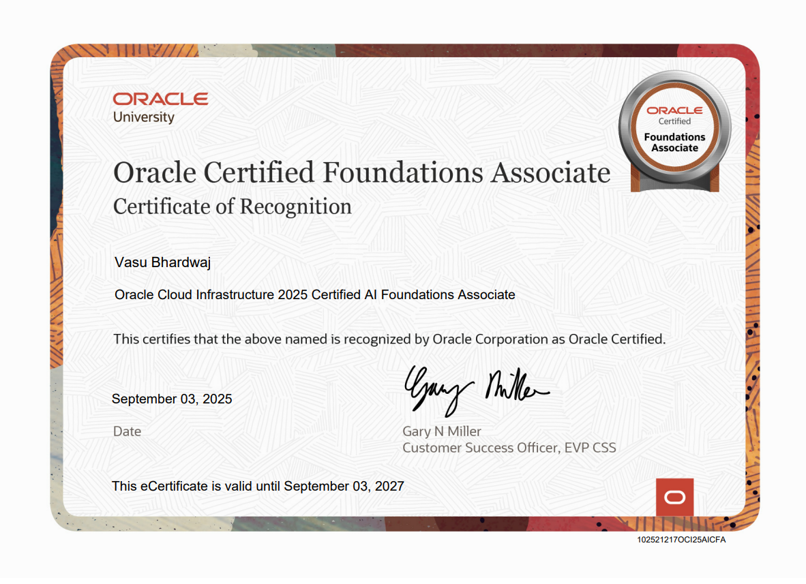
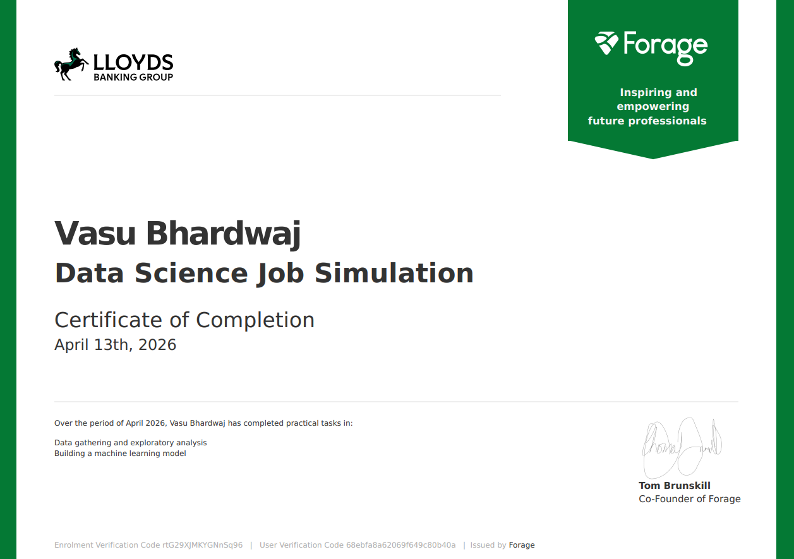
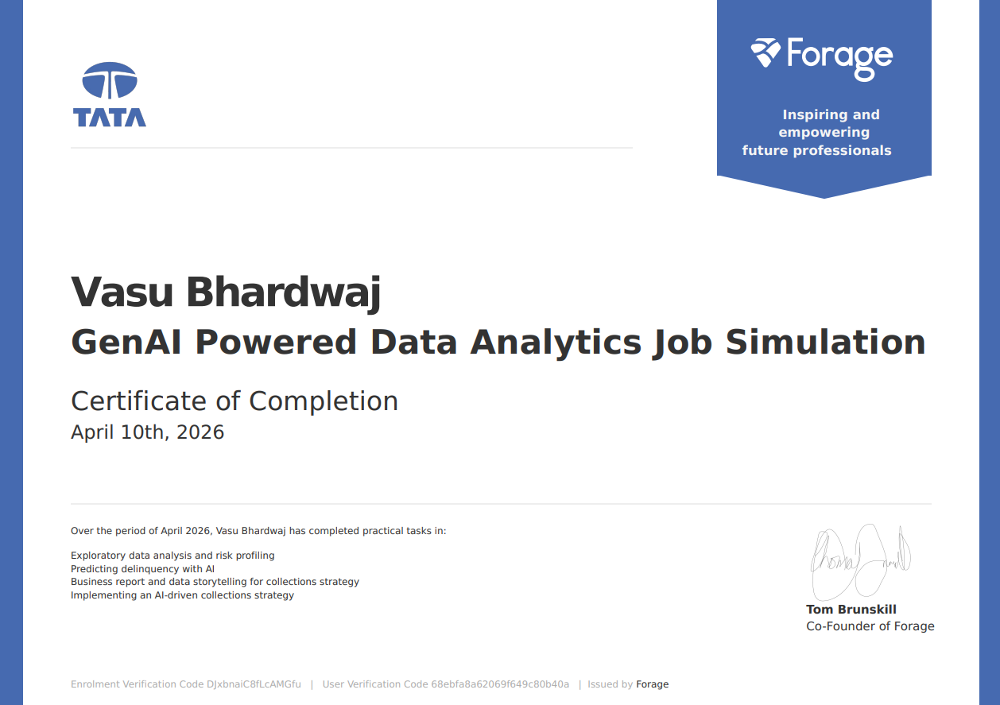
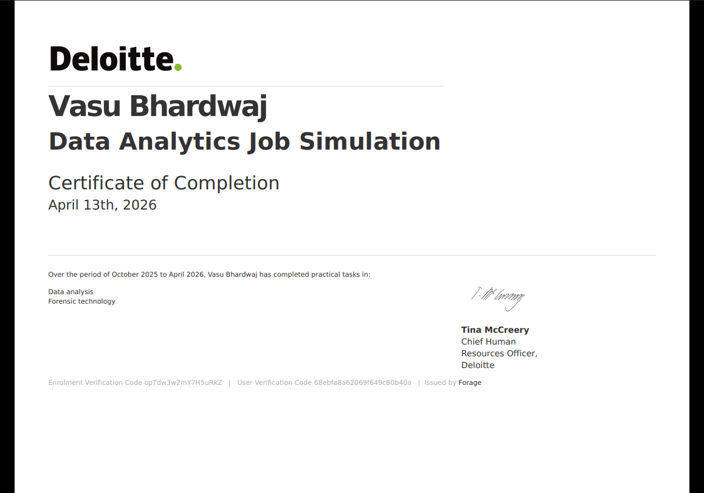

Featured Projects
Healthcare Supply Chain Analytics
End-to-end healthcare supply chain analytics solution covering demand, inventory, facility consumption, and supplier performance. Built with Python, SQL Server, and Power BI to turn operational data into clear business insights.
Zepto Business Performance Dashboard
End-to-end Business Intelligence solution built on a synthetic Zepto quick-commerce dataset. Used SQL Server, Power Query, dimensional modeling and DAX to analyze sales, customers, products, inventory and dark store performance.
Cuvoria Smart Hospital Recommendation System
Built a data-driven hospital recommendation system that ranks hospitals using location, specialization, rating, consultation fee, and availability, with interactive analytics, maps, and an AI assistant.

ChatGPT Prompt Engineering Mastery
AI for Business Professionals

OracleOracle Cloud Infrastructure 2025 Certified AI Foundations Associate
Oracle Cloud Infrastructure 2025 Certified Foundations Associate
Oracle Cloud Infrastructure 2025 Certified Data Science Professional
Career Essentials in Generative AI by Microsoft and LinkedIn
Career Essentials in GitHub Professional Certificate

Lloyds Banking GroupData Science Job Simulation

Tata · ForageGenAI Powered Data Analytics Job Simulation
EY Technology Risk Virtual Job Simulation

Deloitte · ForageData Analytics Job Simulation
Certificate Title
Let's Connect
Open to internships, entry-level data analyst roles, and analytics projects. Send a message below or reach out directly — I usually respond quickly.
Send a message
Fill this in and it lands straight in my inbox.